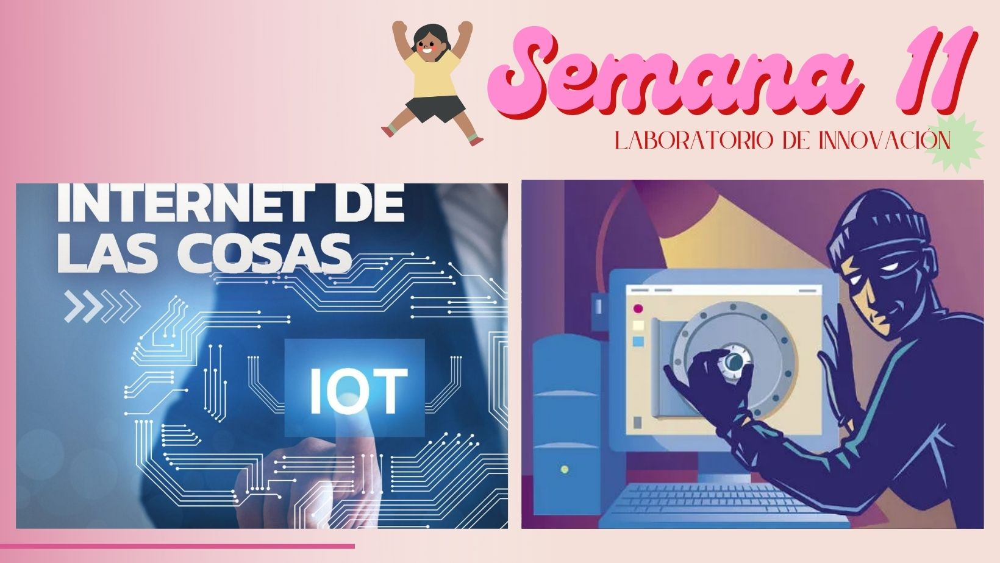

Semana 2
EL INTERNET DE LAS COSAS El Internet de las cosas describe objetos físicos o grupos de estos con sensores, capacidad de procesamiento, software y otras tecnologías que se conectan e intercambian datos con otros dispositivos y sistemas a través de internet u otras redes de comunicación.
Se ha considerado un término erróneo porque los dispositivos no necesitan estar conectados a la Internet pública. Sólo necesitan estar conectadas a una red y ser direccionables individualmente.
Los pasos generales para aumentar la privacidad y la seguridad de los dispositivos loT incluyen informarse sobre las opciones de seguridad incluidas en tal dispositivo, desactivarlo cuando no está en uso y cambiar las contraseñas u otras configuraciones de seguridad predeterminadas.